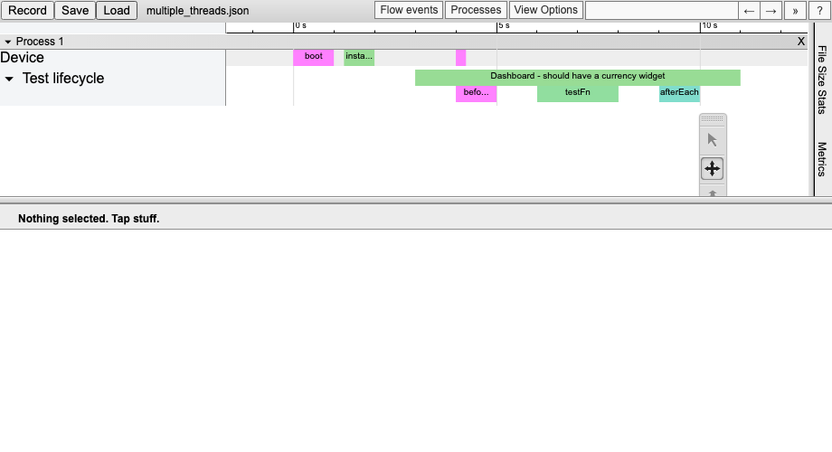

trace-event-lib


A library to create a trace of your JS app per Google's Trace Event format.

These logs can then be visualized with:
- chrome://tracing (see the archive)
- Perfetto – doesn't support async events, as of 29.06.2022.
Install
npm install trace-event-lib --save
Usage
import { AbstractEventBuilder } from 'chrome-trace-event';
class ConcreteEventBuilder extends AbstractEventBuilder {
send(event) {
// write your event into a stream, array, etc...
}
}
const trace = new ConcreteEventBuilder();
trace.begin({ cat: 'category1', name: 'event name' });
// ... do something ...
trace.end();
const handle = trace.begin({ cat: 'network', name: 'send request', tid: 2 });
// ... do something ...
handle.end({ args: { /* response */ } });
// See also:
//
// * trace.instant
// * trace.complete
// * trace.beginAsync
// * trace.instantAsync
// * trace.endAsync
// * trace.counter
// * trace.metadata
// * trace.process_name
// * trace.process_labels
// * trace.process_sort_index
// * trace.thread_name
// * trace.thread_sort_index
Links
- https://github.com/google/trace-viewer/wiki
- https://docs.google.com/document/d/1CvAClvFfyA5R-PhYUmn5OOQtYMH4h6I0nSsKchNAySU